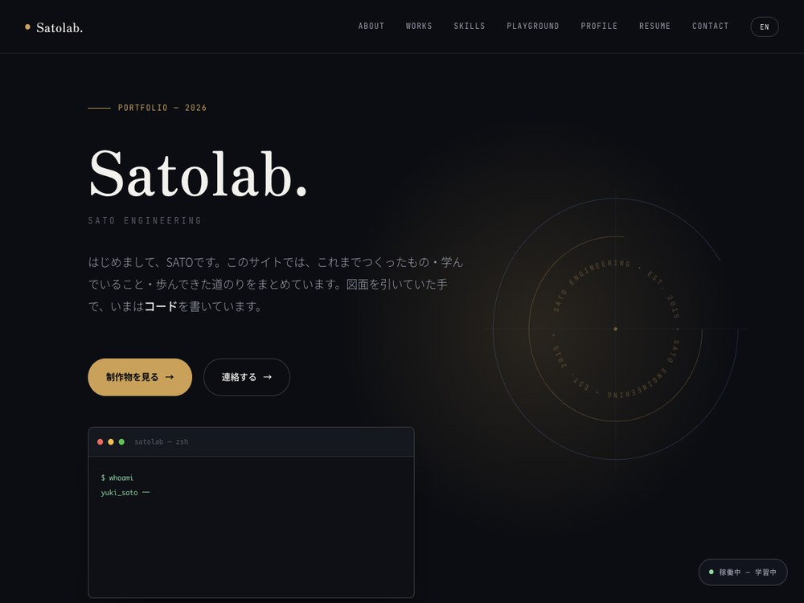
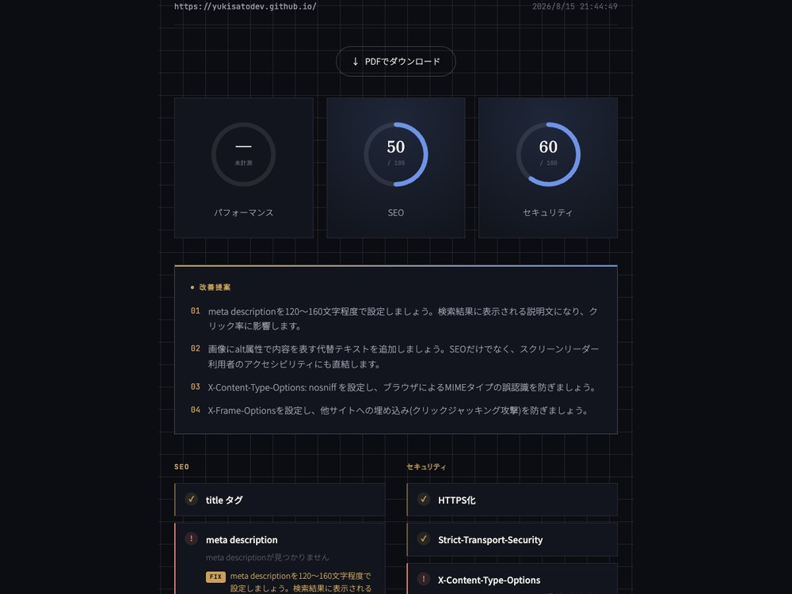
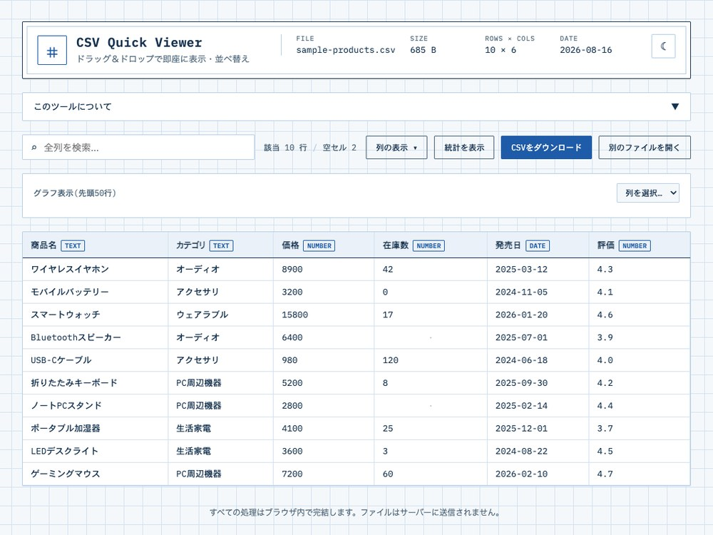
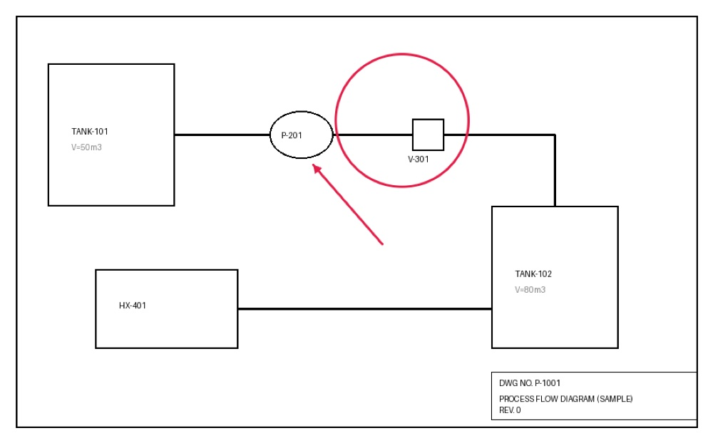

はじめまして、SATOです。このサイトでは、これまでつくったもの・学んでいること・歩んできた道のりをまとめています。図面を引いていた手で、いまはコードを書いています。 Hi, I'm SATO. This site brings together what I've built, what I'm learning, and the path that got me here. The hands that once drew blueprints now write code.
プラント設計エンジニアとしてキャリアをスタートし、AutoCAD/JW-CADを用いた機械・設備設計に約7年間従事しました。その間、Python・AutoLISP・C#/.NETで社内向けの設計自動化ツールを開発し、「手を動かす設計」から「仕組みで解決する設計」へと関心が移っていきました。
その後、建設・不動産会社にて社内業務システム(Java/JavaScript)や自社Webサイト(既存のNext.js製システム)の保守・機能追加を担当。現在はフリーランスとして企業のDX推進・業務改善支援を行いながら、React/Next.js/TypeScript/Python/FastAPIを使ったWebアプリケーション開発も手がけています。
Started my career as a plant design engineer, working roughly seven years on mechanical and equipment design with AutoCAD/JW-CAD. Along the way I built in-house design-automation tools with Python, AutoLISP, and C#/.NET.
I later joined a construction/real-estate company, building internal business systems (Java/JavaScript) and maintaining/extending the company's existing Next.js website. Today I work freelance on DX consulting while building web applications with React/Next.js/TypeScript/Python/FastAPI.
要件定義・設計・実装で担当者が分かれ、伝言ゲームで意図がずれていく——そんな進め方に心当たりはありませんか？React / Next.js / TypeScript / Python / FastAPI で、要件定義から保守運用まで責任を持って推進します。プラント設計時代は係長として技術部門と営業・製造部門の橋渡し役を、建設・不動産会社でも5名規模のチームを牽引した経験があり、丸投げされても自走しつつ、チームとも連携しながら進められます。個人開発でも4プロダクトを企画から公開までやり切っています。
Ever had a project's intent drift as it passed between separate owners? I drive requirements-to-maintenance with React, Next.js, TypeScript, Python, and FastAPI. As section chief in plant design I bridged engineering with sales and manufacturing, and I've led five-person teams at two companies — I can run independently when needed, and coordinate closely with a team when that's what the work calls for. I've also shipped four personal products solo, start to finish.
生成AIを使ってみたいけれど、社外秘の情報が心配——そんな現場にこそ応えられます。ローカルLLM（Ollama）で外部に一切データを送らない議事録要約ツール「meeting-notes」を構築・実証済みです。情報漏洩の不安なく使える生成AI活用を具体的に提案できます。
Want generative AI without sending confidential data to the cloud? I built and proved out meeting-notes, powered by a local LLM (Ollama) that never leaves the device.
P&ID（配管計装図）や機器配置図の修正・確認作業を、毎回手作業で繰り返していませんか？プラント設計会社でAutoLISP・C#/.NETによる自動化システムを構築し、定型図面作成の作業時間を約1/6に短縮、5名規模のチームへ導入した実績があります。同じ発想で「PlantNote」を個人開発・公開しています。
Stuck redoing the same P&ID or equipment-layout checks by hand? I built an in-house automation system in AutoLISP and C#/.NET that cut the time for standard drawings to roughly a sixth, and rolled it out to a five-person team. I later applied the same idea to publish PlantNote.
重要事項説明・契約書管理・物件や案件の進捗管理といった宅建業法特有の実務、開発会社にきちんと伝わっていますか？建設・不動産会社で顧客・物件・案件を一元管理するシステムの要件定義〜保守を推進し、宅地建物取引士も保有。業界の商慣習まで理解した提案ができます。
Worried a dev shop won't get real-estate brokerage practice — disclosures, contracts, case management? I drove a customer-management system end to end and hold a licensed real-estate transaction manager qualification.
複数の案件・窓口が重なり、進捗管理が煩雑になっていませんか？プラント設計・建設不動産の両社で5名規模のチームを係長・課長補佐として牽引し、現在も複数クライアントの案件を並行して自己管理してきた実績があります。
Multiple deadlines and stakeholders colliding? I've led five-person teams at two companies, and I currently self-manage several concurrent freelance clients at once.
技術の移り変わりが早く、エンジニアの学習スピードに不安はありませんか？非IT分野出身から独学でモダンなWeb開発を実務レベルまで引き上げ、この10ヶ月で資格を4つ取得するペースで学び続けています。
Worried about keeping pace with fast-moving tech? Self-taught from a non-IT background to a professional web-dev level, and earning roughly one certification every couple of months over the past ten.
🔒 CSV Quick Viewer・PlantNote・meeting-notesの3つは、データをサーバーに送らずブラウザ／ローカルで処理を完結させる設計で統一しています。 🔒 CSV Quick Viewer, PlantNote, and meeting-notes share one design principle: nothing ever leaves the browser or the device.

フレームワークを使わずHTML・CSS・JavaScriptのみで一から設計・実装した、このサイト自体です。SVGで座標計算から描いたレーダーチャート、Canvas APIのドラッグ描画ツール、Intersection Observerによるスクロール演出などを詰め込んでいます。
This very site — designed and built from scratch with plain HTML, CSS, and JavaScript, no framework. It includes a hand-computed SVG radar chart, a drag-to-draw tool on the Canvas API, and scroll effects via Intersection Observer.

URLを入れると、SEO・セキュリティ・パフォーマンスの基本項目を診断し、前回結果との差分・履歴つきでレポートするツール。診断結果はPDFでもダウンロードできます。
Enter a URL and get an SEO, security, and performance check — with history and diffs against the previous run, plus a downloadable PDF report.

CSVファイルをドラッグ＆ドロップするだけで、その場で表示・ソート・検索・グラフ化できるツール。処理はすべてブラウザ内で完結し、ファイルはどこにも送信されません。
Drag and drop a CSV file to instantly preview, sort, search, and chart it — entirely in the browser, with nothing ever uploaded.

プラント図面・配置図に、フリーハンド・直線・矢印・マーカー・テキストの5種の注釈を書き込めるブラウザツール。画像はサーバーに送らずブラウザ内で処理し、PNGで書き出せます。7年間のプラント設計経験から着想しました。
A browser tool for annotating plant and layout drawings with five markup types — freehand, lines, arrows, markers, and text. Images are processed entirely in the browser and exported as PNG. Born from seven years of hands-on plant-design experience.
会議の音声をブラウザで録音・文字起こしし、ローカルLLM（Ollama／gemma2）で要約・TODO抽出まで行うツール。外部クラウドAPIには一切データを送らないため、社外秘の会議にも使えます。
Records and transcribes meeting audio in the browser, then summarizes it and extracts TODOs using a local LLM (Ollama / gemma2). No data ever leaves the machine — safe for confidential meetings.
フロントエンドからバックエンドまで一気通貫で動かせるのが強みです。React・Next.js・TypeScript・Python・FastAPIは実務で即戦力として使える水準にあり、Go・PHP・AWS/Azure/GCP・Dockerは学習・個人開発レベルで、案件の要件次第でキャッチアップしながら対応します。非IT分野出身でありながら独学でモダンなWeb開発を実務レベルまで引き上げた実績があり、新しい技術のキャッチアップ力には自信があります。今後はクラウドインフラ領域の比重を増やし、専門性をさらに積み上げていく予定です。 My strength is being able to move end to end, from front-end to back-end. React, Next.js, TypeScript, Python, and FastAPI are all at a client-ready level, while Go, PHP, AWS/Azure/GCP, and Docker are at a learning/personal-project level — I ramp up on these as a project's requirements call for it. Coming from a non-IT background and teaching myself modern web development to a professional standard is proof of how fast I can pick up new technology. Going forward I plan to put more weight on cloud infrastructure and keep deepening my specialization.
※ 外部サービスとは連携していない、学習ペースのイメージ図です。 * An illustrative graphic — not connected to any live account or service.
ドラッグして線を引いてみてください。プラント設計時代に図面を引いていた手つきを、ブラウザの上でささやかに再現してみました。 Drag to draw lines on the grid — a small nod to the drafting hand that used to trace blueprints, now living in the browser.
北海道の田舎町で生まれ育ちました。
Born and raised in a rural town in Hokkaido, Japan.
中学でバスケットボール部に入部し、高校まで続けました。大学時代までゆるゆると続けたスポーツとの付き合いは、今もチームで動くことの感覚として自分の中に残っています。
Joined the basketball club in junior high and stayed with it through high school, then kept playing casually through university. That long relationship with team sport still shapes how I think about working with others.
初めてスマートフォンを手にしたのは2014年ごろ。アプリひとつで生活が変わっていく体験に触れ、漠然と「こういう仕組みを作る側にいつか回ってみたい」と感じていました。
Got my first smartphone around 2014. Watching a single app change the way I lived planted a vague thought — "I'd like to be on the building side of things like this someday."
大学では応用生体科学を専攻し、DNAアプタマーを用いた疾病診断技術の研究に取り組みました。仮説を立て、実験し、データで検証し、改善する——その一連のプロセスに強く惹かれ、「論理的に組み立てて、実際に形にする仕事」を軸に就職活動を行いました。ものづくりの現場に近く、設計から検証までを一貫して担えるプラント設計の仕事に魅力を感じ、この道に進みました。
In university I majored in applied biosciences, researching disease-diagnosis techniques using DNA aptamers. I was drawn to the cycle of forming a hypothesis, testing it, verifying with data, and improving — so I looked for work built around "thinking logically, then making it real." Plant design offered exactly that.
プラント設計エンジニアとしてAutoCAD/JW-CADによる機械・設備設計に従事する中、同じような図面修正や確認作業を手作業で繰り返す場面が数多くありました。効率化の余地に気づき、独学でPython・AutoLISP・C#/.NETを学び、社内向けの設計自動化ツールを開発。「仕組みを作れば、繰り返しの作業から人を解放できる」という手応えを得たことが、IT分野へ関心を広げる最初のきっかけになりました。
While working on mechanical and equipment design with AutoCAD/JW-CAD, I kept running into the same repetitive drawing checks and edits done by hand. I taught myself Python, AutoLISP, and C#/.NET and built in-house design-automation tools — the first spark that widened my interest toward IT.
自動化ツールを通じて得た「仕組みで課題を解決する」感覚を、設計業務の枠を超えて会社全体に広げてみたいと考えるようになりました。2022年、社内システムやコーポレートサイトの構築など、より広い範囲でIT活用を推進できる建設・不動産会社へ転職。社内業務システム(Java/JavaScript)や自社Webサイトの構築を担当し、DX推進の実務経験を積みました。
I wanted to apply the "solving problems through systems" mindset beyond design and across an entire company. In 2022 I moved to a construction/real-estate company, building internal business systems (Java/JavaScript) and the company website, and gaining hands-on DX experience.
一社の中でDXを推進する経験を積む中で、業種や企業規模の異なる現場でこそ、この力をより多く試したいという思いが強くなりました。2024年、フリーランスとして独立し、複数の企業のDX推進・業務改善を支援する立場に。
As I gained experience driving DX inside one company, I increasingly wanted to put that ability to work across different industries and company sizes. In 2024 I went freelance, supporting DX and process-improvement work for multiple companies.
フリーランスとして企業の業務改善やシステム導入を支援する中で、提案や調整だけでなく、自分の手でコードを書いて価値を生み出す仕事にもっと時間を使いたいという思いが強くなっていきました。React/Next.js、Python/FastAPIを軸に独学でWebエンジニアとしてのスキルを本格的に積み上げ始めました。
While supporting business-improvement projects as a freelancer, I found myself wanting to spend more time creating value by writing code myself. I started seriously building web-engineering skills on my own, centered on React/Next.js and Python/FastAPI.
日々の忙しさについ忘れてしまいがちですが、今の私があるのは色んな人たちのサポートのおかげです。退職の際に応援してくれた人、技術的に未熟な私にもお仕事を紹介してくださるエージェント、スキルを磨ける環境で働かせてくださったクライアントに、本当に心から感謝しています。
様々なWebサービスに触れて人生が変わる体験をしたように、今後は消費するだけでなく、体験価値を届けられるようなエンジニアになりたい。私自身が抱えている課題や周りの身近な人が抱えている問題をエンジニアリングで解決できるようになりたいと考えています。
また、ものづくりが好きなので、生涯エンジニアとして社会に貢献し続けたいとも思っています。
それを実現するにはどうしたらいいのか。日々進化し続ける技術をキャッチアップするための研鑽はもちろんのこと、クライアントの悩みや課題を解決できるよう、クライアントの目線を培っていく必要があります。
まだまだ至らない点はたくさんありますが、時代に合わせた技術を追いかけつつ、クライアントに寄り添ったエンジニアリングができるよう、心がけていきます。
It's easy to forget amid the busyness of daily life, but I'm where I am today because of so many people's support. I'm deeply grateful to everyone who encouraged me when I left my job, to the agents who introduce work to me even while I'm still technically inexperienced, and to the clients who gave me an environment where I could sharpen my skills.
Just as encountering various web services changed my life, I want to become an engineer who delivers real experiential value — not just consumes it. I want to be able to solve problems I face myself, and problems the people around me face, through engineering.
I also love making things, so I want to keep contributing to society as an engineer for the rest of my life.
So how do I make that happen? Beyond constantly honing my skills to keep up with ever-evolving technology, I need to build the ability to see things from the client's perspective, so I can solve the problems they bring to me.
There's still a lot I fall short on, but I'll keep chasing the technology of the times while staying committed to engineering that stands close to my clients.
このポートフォリオは、フリーランスとしてWebエンジニアの実務を積み上げていく過程の一部として、自分の手で設計・実装しました。フレームワークを使わずHTML・CSS・JavaScriptのみで構築しています。
スキルシートのレーダーチャートは座標計算から自前で描画したSVG、Playgroundの製図ツールはCanvas APIで実装、スクロール演出はIntersection Observer APIを使っています。
I designed and built this portfolio myself, as part of the process of building real, hands-on experience as a freelance web engineer. Built with plain HTML, CSS, and JavaScript, no framework.
The skill radar chart is hand-computed SVG, the Playground tool runs on the Canvas API, and scroll reveals use the Intersection Observer API.
お仕事のご相談はお気軽にどうぞ。 Feel free to reach out about work.
teno52sato@gmail.com